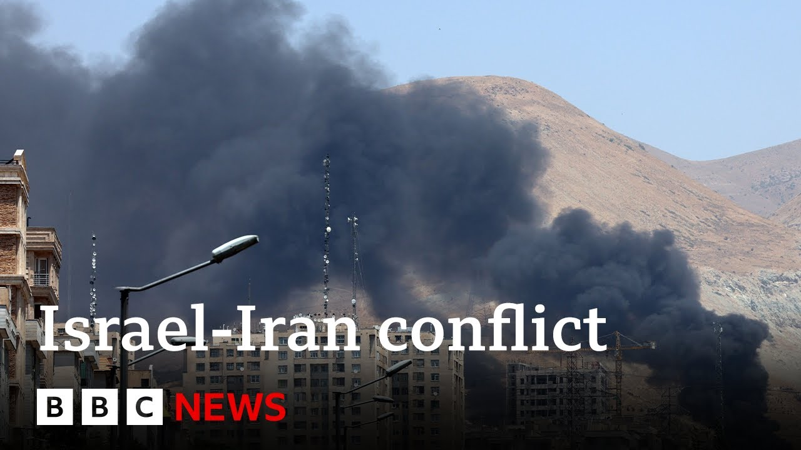

【以色列军方称已完全掌控伊朗首都上空 | BBC新闻】
Summary: The Israel-Iran conflict has entered its fourth day, with both sides continuing to exchange fire. Israel claimed it has gained full control of Tehran's airspace following Iran’s overnight missile strikes and warned residents of Tehran that they would face consequences—though it later clarified it had no intention of harming civilians. Casualties on both sides continue to rise. Iran has called on European nations to intervene and stop what it described as Israeli aggression. The Israeli military announced that it had killed four senior Iranian officials in airstrikes and had achieved complete air superiority over Tehran. The situation is evolving rapidly, prompting widespread panic and civilian evacuations. Satellite imagery shows damage to Iranian military and nuclear facilities. The International Atomic Energy Agency has warned that the escalating conflict could pose a radiation risk. Experts predict the fighting may last for several weeks, with the United States seen as the only potential mediator.
摘要： 以伊冲突进入第四天，双方持续交火。以色列称在伊朗夜间导弹袭击后已完全掌控提兰领空，并警告德黑兰居民将付出代价，随后澄清无意伤害平民。双方伤亡持续上升，伊朗呼吁欧洲制止以色列侵略。以军宣布通过空袭击杀四名伊朗高官，并取得德黑兰领空完全控制权。冲突动态迅速，民众恐慌逃离，卫星图像显示伊朗军事及核设施受损，国际原子能机构警告局势升级可能引发辐射风险。专家分析此战或持续数周，美国被视为唯一可能调停方。

⏱️ Estimated Reading Time: 26 min
📚 六级生词 📚 雅思生词 📚 托福生词 📚 专八生词 📚 SAT生词 📚 考研生词 📚 GRE生词 📚 高考生词
Now we start in the Middle East where strikes between Israel and Iran are now on their fourth day.
现在我们从中东开始报道，以色列与伊朗之间的袭击已进入第四天。
Israel says it has full aerial operational control over Tyran after Iran hit Israeli cities with a wave of missiles overnight.
以色列称，在伊朗夜间发动导弹袭击后，已完全掌控提兰的领空作战权。
Our correspondent Anna Foster is in Jerusalem covering all of the latest developments for us.
我们的记者安娜·福斯特在耶路撒冷为您报道所有最新进展。
Let me bring you right up to date with the latest on the conflict between Israel and Iran and hostilities here in the Middle East which continue to increase as 4 days now have passed since those attacks that Israel launched on Iran in the very early hours of Friday morning.
让我为您带来以伊冲突及中东敌对行动的最新情况——自以色列周五凌晨发动袭击以来，局势已持续升级四天。
Now, Israel's defense minister, Israel Katz, has warned that the residents of Thran would, as he put it, pay the price for Iranian attacks on his country's citizens.
以色列国防部长卡茨警告称，德黑兰居民将“为伊朗袭击以色列公民付出代价”。
But he has since qualified that statement that he put on social media.
但他在社交媒体上补充说明了这一表态。
He said that there was no intention to physically harm the city's residents.
他表示无意对城市居民造成人身伤害。
Now, Israel says the number of people who've been killed by Iranian missiles has risen to 24 since Friday, with eight of those deaths coming overnight from Sunday into Monday.
以色列称，自周五以来伊朗导弹造成的死亡人数已升至24人，其中8人死于周日至周一夜间。
There were missile attacks against uh Hifur and Tel Aviv.
导弹袭击了海法和特拉维夫。
Now, Iran's health ministry says that more than 220 people have been killed in Israeli attacks since Friday.
伊朗卫生部表示，自周五以来以色列袭击已致220多人死亡。
It's called on European nations to stop what it describes as an Israeli aggression.
伊朗呼吁欧洲国家制止其所谓的“以色列侵略行径”。
And the Israeli military says that it killed four senior Iranian intelligence officials with a targeted air strike and says it now has full aerial operational control over the Iranian capital Thran.
以军称通过定点空袭击杀四名伊朗高级情报官员，并宣布已完全控制伊朗首都德黑兰的领空作战权。
So it is a a fastmoving conflict as you know things developing and changing all of the time.
正如您所知，这是一场快速变化的冲突，事态时刻在演变。
We've also been seeing pictures from Thran of people desperately trying to to leave that city.
我们还看到德黑兰民众拼命试图逃离的画面。
Long uh cues of cars, traffic jams as people try to leave.
车辆排起长龙，交通堵塞，人们争相离开。
Of course, as these Israeli attacks continue, people there are trying to protect themselves and their families, and they feel that the best way to do it is to try and get out of the Iranian capital uh Thran at the moment.
随着以军持续袭击，当地民众正竭力保护家人，他们认为目前最佳方式是离开德黑兰。
Now, Israel has been also um experiencing seeing and hearing and feeling these barges of Iranian missiles that have been coming towards Hifur, towards Tel Aviv as well.
以色列也持续遭受伊朗导弹袭击，海法和特拉维夫均受冲击。
I just want to show you these pictures filmed uh by our BBC cameraman, Robbie Wright.
请看我台摄像师罗比·赖特拍摄的画面。
And this is what it looked like early this morning in Tel Aviv.
这是今晨特拉维夫的景象。
You can see in here there the uh the sound and the sight of those Iranian missiles being intercepted in the sky high above Israel by its air defense systems.
可见伊朗导弹在以色列高空被防空系统拦截的声光景象。
But some of those missiles do get through and our Middle East correspondent Hugo Basha is at one of those sites that was hit uh in one of those barges of Iranian missiles.
但部分导弹突破防线，我台中东记者雨果·巴沙正在其中一处被袭地点。
Uh Hugo, what is happening where you are?
雨果，现场情况如何？
Yeah. And I'm here in the city of Petika.
我在佩提卡市。
This is you know one of the cities uh where uh this uh you know an Iranian missile hit a building.
这里是伊朗导弹击中的建筑所在地。
So let me just show you because behind me we can see this 20story building that was hit.
请看身后这栋被击中的20层大楼。
You can see this huge hole in the building.
建筑上可见巨大破洞。
And this is the point of impact of this missile.
此处正是导弹命中点。
And this attack happened at around 4:00 in the morning.
袭击发生在凌晨4点左右。
And at least four people were killed here.
至少四人遇难。
And uh two of the victims had been inside bomb shelters at the time of the attack.
其中两名遇难者当时身处防空洞内。
And the missile struck a wall between the shelters uh and uh the walls of the shelter uh didn't you know collapsed as a result of this uh direct impact here.
导弹击中防空洞间墙壁，导致墙体坍塌。
Now there's a lot of work here.
目前修复工作正在进行。
All morning residents have been coming to the buildings.
居民整早晨都在返回建筑。
Uh this is a residential complex with four buildings.
这个住宅区有四栋楼。
All of them have been damaged.
全部受损。
They've been coming here uh visiting their flats uh if possible, collecting some some objects.
他们尽可能返回公寓取物品。
They don't know when they're going to be able to return to their homes, but there is a lot of you know work to repair the damage uh already happening.
尚不知何时能返家，但修复工作已展开。
And I think the feeling that I I got from you know talking to people here and also yesterday in a different city that had been attacked is that people are in shock with this in shock with the scenes that they're seeing here.
与当地及昨日另一受袭城市民众交谈后，我感到人们对这些景象深感震惊。
Uh and uh I think there's also you know the feeling uh that they felt they were protected by the country's air defense systems.
他们原以为国家防空系统能提供保护。
Uh obviously Israel has a very sophisticated layer of protection and now they're saying that this system is not perfect.
以色列虽拥有精密防护体系，但民众意识到其并非完美。
I mean, I think the strategy here, the Iranian strategy is to fire dozens, if not hundreds of missiles and drones at the same time trying to overwhelm the country's air defense system.
伊朗策略是同时发射数十甚至数百枚导弹和无人机以饱和防空系统。
So, it's almost inevitable that some missiles are going to penetrate this layer of defense.
因此部分导弹突破防线几乎不可避免。
And the authorities have been telling the population here in Israel that this is a robust, strong system, but it is not perfect.
当局告知民众该系统强大但不完美。
So, they've been telling the public to uh follow the instructions.
呼吁公众遵循指令。
There's a state of emergency here to seek shelter when these attacks happen.
紧急状态下遇袭需立即避难。
And the indications from the Israeli authorities are that these attacks against Iran are going to continue.
以方暗示对伊打击将持续。
Uh perhaps this is a prolonged campaign, not days but weeks.
这可能演变为长达数周的持久行动。
And they ex uh and they they're saying that they expect attacks like this to continue.
预计此类袭击将持续。
Yo Basha in Petatikba, thank you for joining us.
佩提卡巴的雨果·巴沙，感谢连线。
BBC Verify has been looking at what satellite imagery can tell us about the damage that's been inflicted by Israel on Iran's military infrastructure and nuclear facilities.
BBC核查组通过卫星图像分析以军对伊朗军事设施及核设施造成的破坏。
Let's hear more from BBC Verifies Melon Thomas.
请听BBC核查员梅隆·托马斯报道。
As Iran and Israel continue launching strikes, satellite imagery can give us an insight into what's happening on the ground.
以伊持续交火中，卫星图像揭示地面实况。
And it's particularly useful when looking at Iran, where it's incredibly difficult for BBC journalists to operate.
这对记者难以进入的伊朗尤为重要。
Now, let's take a closer look.
让我们细看。
We've been examining satellite images of Israeli strikes on military infrastructure and nuclear facilities across Iran.
我们分析了以军袭击伊朗全境军事及核设施的卫星图像。
These are some of the areas in Iran that we've been analyzing.
这些是已分析的部分区域。
Now, this is an image from the 15th of June of a missile base in Biden, which has been hit.
这是6月15日被袭的拜登导弹基地图像。
And you can see really clear damage from space in the roof of this building.
从太空可见建筑顶部明显损毁。
And elsewhere, we can see several areas of damage at the international airport in Tbreeze, which is near a reported military base.
大不里士国际机场多处受损，该地邻近军事基地。
Now, we've compared images taken on the 13th and the 14th of June.
我们对比了6月13日与14日的图像。
You can see this blackened area in the center of the main runway here.
主跑道中央可见焦黑区域。
And you can see signs of damage to a taxi way at one end.
滑行道一端有损毁痕迹。
Two points here where it meets the main runway.
与主跑道接驳的两处点位。
And have a look at this.
请看这里。
This is Natance.
这是纳坦兹。
That's a nuclear site where you can see damage here in an image on the 14th of June.
6月14日图像显示该核设施受损。
Now, according to analysis from the Institute for Space and International Security, this electrical substation here was damaged alongside the pilot fuel enrichment plant as well.
太空与国际安全研究所分析认为，该变电站与燃料试验厂同遭破坏。
Now, at BBC Verify, we're still examining more satellite imagery from elsewhere in the country, and we're speaking to experts who can help us understand more about what type of damage we're seeing, and they can tell us what type of targets have been hit, too.
BBC核查组仍在分析伊朗其他地区卫星图像，并咨询专家评估损毁程度及目标类型。
Well, the head of the uh nuclear watchdog, the IAEA, has been uh talking about damage to Iran's nuclear sites.
国际原子能机构总干事谈及伊朗核设施受损情况。
Now, he says there has been no further damage since Israel's attack was launched on Friday.
他表示自周五以军袭击后未新增破坏。
Rafael Graci has been addressing what has been called as an extraordinary session of the uh International Atomic Energy Agency's Board of Governors to discuss those strikes.
格罗西在原子能机构特别理事会上发言讨论此次袭击。
He said there had been no more damage at the Natan site in central Iran.
他称伊朗中部纳坦兹设施未再受损。
There has been no indication of a physical attack on the underground cascade hall containing part of the pilot fuel enrichment plant and the main fuel enrichment plant.
未发现对含燃料试验厂及主浓缩厂部分设备的地下大厅实施物理攻击的迹象。
However, the loss of power to the cascade hall may have damaged the centrifuges located there.
但电力中断可能损及离心机。
The level of radioactivity outside the Natan's site has remained unchanged and at normal levels indicating no external radiological impact to the population or the environment from this event.
纳坦兹外围辐射水平正常，表明事件未对民众及环境造成放射性影响。
Well, Mr. Gossi also said that there was no change to radioactivity levels at the Isvasan uh nuclear site and other key sites in Iran.
格罗西表示伊斯法罕等其他关键核设施辐射水平亦无变化。
It was also damaged on Friday.
这些设施周五同样受损。
But he did have this warning about the ongoing conflict.
但他对持续冲突发出警告。
Military escalation threatens lives, increases the chance of a radiological release with serious consequences for people and the environment, and delays indispensable work towards a diplomatic solution from uh for the long-term assurance that Iran does not acquire nuclear weapons.
军事升级威胁生命，增加放射性泄漏风险，延缓确保伊朗不拥核的外交努力。
Consistent with the objective of the IEA and its statute, I call on all parties to exercise maximum restraint to avoid further escalation.
我呼吁各方保持最大克制防止局势升级，这符合原子能机构宗旨。
Well, that was what uh Rafael Graci, the head of the IAEA, had to say at that extraordinary meeting.
这是原子能机构总干事格罗西在特别会议上的发言。
Uh you can see the level of concern that's been caused by those attacks on Iran's nuclear infrastructure generally on what it could mean for the civilian population there and more widely a field as well.
可见对伊朗核设施的袭击引发广泛担忧，涉及平民及更深远影响。
Well, let's speak to our correspondent Gia Gaul uh from BBC Persian.
现在连线BBC波斯语台记者吉亚·高尔。
Um they of course are constantly in touch with people inside Iran.
他们持续联系伊朗国内民众。
Gia, what do you think that Israel is trying to achieve here?
吉亚，你认为以色列意图何在？
Because the official message is it's about trying to uh defend Israel.
官方称旨在保卫以色列。
It's about trying to stop Iran from developing a nuclear bomb.
阻止伊朗发展核武。
But more and more people are talking about an ambition from Israel, a regime change in Iran.
但越来越多人认为以色列企图推动伊朗政权更迭。
Exactly.
确实。
And if you look what Prime Minister Netanyahu has said in the past few days, he is very clear.
内塔尼亚胡总理近日表态明确。
He wants regime change in Iran, he has called on Iranian people to rise up against the Islamic Republic of Iran.
他呼吁伊朗民众反抗现政权。
And if you look what they have done in the past few days, yesterday they wiped out the entire leadership of Iranian revolutionary guards intelligence unit.
过去几天以军消灭了伊朗革命卫队情报部门全部领导层。
When we talk about military intelligence, military intelligence we normally deal with military issues.
军情部门通常处理军事事务。
But revolutionary guards intelligence unit they have been very pivotal in suppressing dissident inside Iran and outside the country.
但革命卫队情报部门是镇压国内外异见者的关键力量。
In fact 2022 there was a mass uprising across the country.
2022年全国爆发大规模抗议。
IRGC and also its intelligence unit were very crucial in suppressing that uprising.
革命卫队及其情报部门强力镇压了抗议。
And also today the IDF says they have targeted Iranian revolutionary guards elite unit center in Thran.
今日以军称袭击了德黑兰的革命卫队精英部队中心。
It's all seems to me Israel trying to weakening Iranian security forces which many of them are being used also against dissident inside Iran.
以色列似乎意图削弱伊朗安全力量——这些力量多用于镇压国内异见。
It's it's all clear Israel seems to have that policy by weakening Iranian security forces domestically paved the way and create an environment for Iranian people who are not happy with the situation in Iran with economic situation with inflation and many frankly call this war it is the regime wars not their wars that's why I think trying to trying to create that that momentum for Iranian people to rise up but the defense Minister Mr. Katz very clearly yesterday said Iranian teran civilian could be a target certainly it's not in line with with what prime minister has been saying in the past two days just briefly we've seen people trying to leave Thran big traffic jams what do people know what kind of information are they getting there inside Iran about what is unfolding what is happening well Israel has been warning people leave civil leave area which is close to military and secret facilities.
以色列政策显然是通过削弱伊朗安全力量，为不满经济现状的民众创造反抗环境。但防长卡茨昨日称德黑兰平民可能成为目标，这与总理表态矛盾。德黑兰出现民众逃离导致的交通拥堵——伊朗民众对局势了解有限，以方虽警告民众远离军事设施，但许多秘密基地位置不为民众所知。
But the problem is many Iranian people in Thran they have no clue where those facilities where those bases factories are based because many of them are secret built places nobody knows about it.
问题在于许多德黑兰民众不知这些秘密设施位置。
That's why many are extremely worried.
因此民众极度恐慌。
They are they are trying to leave and even today police says all the entrance of the city is open for people to leave the city if they wish.
警方今日开放所有出城通道供民众撤离。
Gagal, our BBC Persian correspondent.
BBC波斯语台记者高尔。
Thank you so much for uh for joining us for your insight as this uh conflict continues to escalate.
非常感谢您加入我们，分享您对这一不断升级的冲突的见解。
There really is no sign that those continuing waves of retaliatory strikes that we're seeing between uh the two sides, another one here in Israel, barrage of Iranian missiles that arrived at about 4:00 this morning.
目前没有任何迹象表明双方持续的报复性打击会停止，今早约4点，又一波伊朗导弹袭击了以色列。
And again, those pictures that we're seeing from Iran with Israel saying that some of its most senior intelligence leaders have been killed in the last 24 hours and the biggest oil refinery in the country has also been uh set a light by Iranian attacks.
此外，我们从伊朗看到的画面显示，以色列称其多名高级情报官员在过去24小时内被杀，该国最大的炼油厂也遭到伊朗袭击并起火。
So it is very fastmoving.
局势发展非常迅速。
It's very complex story even for the diplomats to follow.
即使对外交官来说，这也是一个非常复杂的故事。
But that is the question really about how this might be resolved.
但真正的问题在于如何解决这一冲突。
What might be next for this conflict and if anybody has the the the ability I suppose to control what Israel and Iran decide to do next.
冲突下一步会如何发展，是否有人有能力控制以色列和伊朗的下一步行动。
Well, joining me now is Vali Nasser, a professor professor of international affairs and Middle East studies at the John's Hopkins University School of Advanced International Studies.
现在加入我们的是瓦利·纳赛尔，约翰霍普金斯大学高级国际研究学院的国际事务和中东研究教授。
Thank you for joining us here on BBC News.
感谢您加入BBC新闻。
What is your assessment of what you're seeing so far and whether there is anything that could be happening I in the next sort of 24 48 hours short term that could bring this to a halt because at the moment people are saying that this could last for weeks or even longer.
您对目前局势的评估是什么？未来24到48小时内是否可能出现任何短期措施来阻止冲突，因为目前有人认为冲突可能持续数周甚至更长时间。
Uh I do not see a a stop to this conflict in the short term because uh this is now a full-fledged war.
我认为短期内冲突不会停止，因为这是一场全面战争。
Israel uh has uh started this war with the aim of destroying Iran's nuclear program and it's not close to having achieved that and it wanted also to downgrade and destabilize the Iranian state.
以色列发动这场战争的目的是摧毁伊朗的核计划，但尚未接近实现这一目标，同时还试图削弱和 destabilize 伊朗政权。
It has assassinated a number of leaders.
它已暗杀多名领导人。
It has hit a lot of targets but it hasn't achieved that either.
它袭击了许多目标，但也未能实现目标。
And if in the face of Iranian missiles Israel was to stop now it would look like it has failed in its mission.
如果以色列现在在伊朗导弹面前停止行动，会显得任务失败。
Similarly, Iran does not want to be seen that it has caved to Israeli military attack and it wants to push uh Israel to uh recalibrate and recalculate the cost that it's incurring by waging this war.
同样，伊朗不希望被视为屈服于以色列的军事攻击，并希望迫使以色列重新评估发动这场战争的代价。
I think the two sides are going to bloody one another for a while longer before there might be an opening for any kind of a ceasefire conversation.
我认为双方将继续互相攻击一段时间，之后才可能有停火谈判的机会。
who has influence on what is happening right now.
谁对当前局势有影响力？
So for example in the last 24 hours or so uh we heard that Israel had plans to assassinate uh the supreme leader of Iran Ayati Kame but the US President Donald Trump put paid to that and said that he would not support it and that's why it didn't happen.
例如，过去24小时左右，我们听说以色列计划暗杀伊朗最高领袖阿亚图拉·哈梅内伊，但美国总统唐纳德·特朗普阻止了这一计划，表示不支持，因此未能实施。
equally a suggestion that Russia's Vladimir Putin might start to become some sort of peacemaker which would be a a departure for him to get involved and and arrange some sort of ceasefire.
同样，有建议称俄罗斯的弗拉基米尔·普京可能开始扮演某种和平调解者的角色，这将是他介入并安排某种停火的转变。
Who is really in control here of what's going on?
谁真正掌控着当前的局势？
I mean the only uh country that literally can actually bring about some form of ceasefire or mediate is the United States because United States alone has influence with Israel.
唯一能够促成某种停火或调解的国家是美国，因为只有美国对以色列有影响力。
the kind of influence that can change Israel's position and also the United States has uh the kind of uh leverage with Iran in form of nuclear negotiations, sanctions relief that would be of interest to the Iranians.
这种影响力可以改变以色列的立场，同时美国还拥有对伊朗的杠杆，如核谈判和制裁解除，这些对伊朗人有吸引力。
Uh President Trump could use President Putin as a gobetween, but President Putin cannot do that on his own.
特朗普总统可以利用普京总统作为中间人，但普京总统无法独自做到这一点。
And I think the President Trump saying that he vetoed uh the killing of Iran's Supreme Leader may or may not be true.
我认为特朗普总统声称他否决了暗杀伊朗最高领袖的计划可能属实，也可能不属实。
But the reason that he's saying it is to provide political space for the Iranian leadership to accept a US mediating role.
但他这样说是为了让伊朗领导层有政治空间接受美国的调解角色。
So he's trying to play good cop in order to be able to have some kind of an influence on the outcome.
因此，他试图扮演“好警察”的角色，以便能够对结果产生某种影响。
Bal NASA, thank you for uh for joining us, for sharing your analysis with us.
瓦利·纳赛尔，感谢您加入我们并分享您的分析。
Really appreciate it.
非常感谢。
And I that is really key right now is is who actually has the power to try and affect what's happening here in the Middle East.
目前的关键在于谁真正有能力影响中东局势。
And certainly all eyes are on the US particularly as the US President Donald Trump over the weekend has really oscillated between several different positions at times seeming to support what was happening.
当然，所有人的目光都集中在美国身上，尤其是美国总统唐纳德·特朗普在周末多次改变立场，有时似乎支持正在发生的事情。
And that was after the US Secretary of State Marco Rubio put out a statement very early on distancing the US from what was happening.
此前，美国国务卿马可·鲁比奥很早就发表声明，与美国正在发生的事情保持距离。
There are real concerns for both US, UK, French and other assets here in the region.
美国、英国、法国和其他国家在该地区的资产确实令人担忧。
So I think Lucy, one thing that we're going to be talking about a lot more in these next few days and which I know you're about to talk more about now is is diplomacy.
因此，露西，我认为未来几天我们将更多地讨论外交问题，我知道你现在要更多地谈论这一点。
When world leaders are getting together, the conversations that they are having, they will really be trying to work out how they can perhaps navigate a path through this between two sides, neither of whom at the moment wants to back down.
当世界领导人聚在一起时，他们的对话将真正试图找到一条途径，在双方都不愿让步的情况下解决问题。
Anna Foster there with the very latest for us from Jerusalem.
安娜·福斯特从耶路撒冷为我们带来最新消息。
We do have lots of live pictures coming to us uh from Israel.
我们确实收到了来自以色列的许多现场画面。
Uh you can see here the site of one of the Iranian strikes in Benai Brack.
你可以看到这里是被伊朗袭击的贝内巴拉克的一处地点。
A crowd of people there just gathered around.
一群人聚集在那里。
We also have the skyline for you of Tel Aviv as well.
我们还为您带来了特拉维夫的天际线。
Israel now saying at least eight people have been killed in a third night of bombardment of Israeli cities.
以色列称，在第三晚对以色列城市的轰炸中，至少有8人丧生。
That brings the total to 24.
总死亡人数达到24人。
Nearly 300 people are being treated in hospital.
近300人正在医院接受治疗。
Uh the Israeli military now says it's destroyed onethird of Iran's surfacetosurface launches.
以色列军方称已摧毁伊朗三分之一的地对地导弹发射装置。
Uh Thran is accusing Israel of targeting a hospital in western Iran, condemning it now as a war crime as well.
德黑兰指责以色列袭击了伊朗西部的一家医院，并谴责这是战争罪。
And just to tell you, Iranian um authorities are saying the number of people killed there since Friday is 244.
伊朗当局称，自周五以来，死亡人数已达244人。
More for you on the BBC News.
BBC新闻为您带来更多报道。